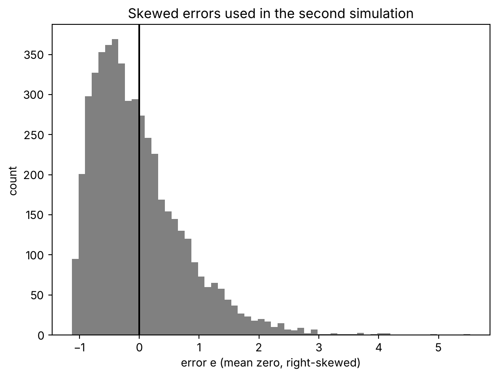
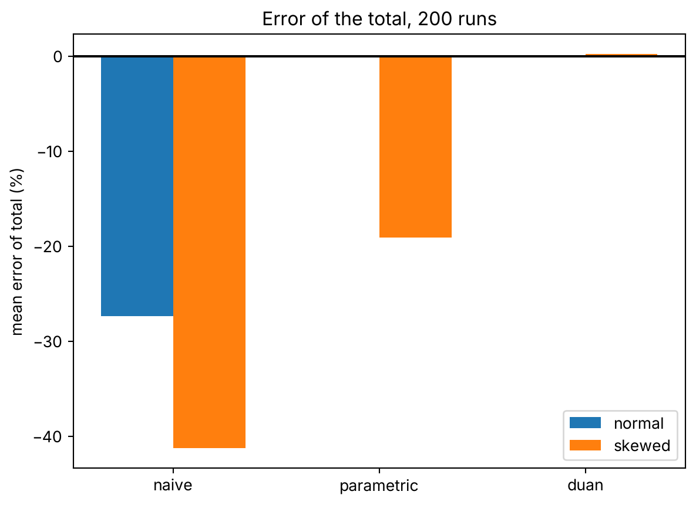

import numpy as np
import matplotlib.pyplot as plt
import statsmodels.api as smYour log model predicts the median, not the average price
regression
simulation
python
Fit a regression on log-price, undo the log, and the total of your predictions comes out about 27% short. Here is why, and a one-line fix that survives skewed errors.
You fit a model to log-price, predict the price of 5,000 houses, undo the log and add them up. The total comes out 28.5% short.
That’s more than a quarter of the money.
The model is fine and so are the residuals. Each prediction is a reasonable price for its house. Only the sum is off.
The simulation
I simulate the market first, so I know the true total. Price depends on floor area, and the noise lives in logarithms, as it usually does with prices.
np.random.seed(42)
n = 5000
a, b, sigma = 11.0, 0.012, 0.8
area = np.random.uniform(40, 200, n) # square metres
log_price = a + b * area + np.random.normal(0, sigma, n)
price = np.exp(log_price)Now the usual move. Regress log-price on area.
X = sm.add_constant(area)
fit = sm.OLS(log_price, X).fit()
log_hat = fit.predict(X)
resid = log_price - log_hat
print("coefficients:", fit.params.round(4))
print("residual sd:", resid.std(ddof=2).round(4))coefficients: [11.0418 0.0115]
residual sd: 0.8156It recovers what I put in. The slope is 0.0115 for a true 0.012, and the residual spread is 0.82 for a true 0.8. Nothing to complain about.
Then you go back to euros with exp and sum.
naive = np.exp(log_hat)
print(f"actual total: {price.sum():,.0f}")
print(f"naive total: {naive.sum():,.0f}")
print(f"relative error: {naive.sum() / price.sum() - 1:.1%}")actual total: 1,988,788,231
naive total: 1,421,831,128
relative error: -28.5%There it is. You promised 1.42 billion and the market holds 1.99 billion.
What exp gives you
A regression on logs estimates the center of the log-price for each house. That center is also the median, because the errors are symmetric around it.
exp preserves order. If half of the log-prices fall below a value, half of the prices fall below its exponential. So \(\exp(\hat y)\) is the median price of a house like this one.
Check it.
print("exp(sigma^2/2):", np.exp(sigma**2 / 2).round(4))
print("mean(price / exp(yhat)):", (price / naive).mean().round(4))
print("share of prices below exp(yhat):", (price < naive).mean().round(4))exp(sigma^2/2): 1.3771
mean(price / exp(yhat)): 1.3963
share of prices below exp(yhat): 0.5012The third line is the proof: 50.1% of real prices fall below the prediction. It’s a median.
The mean sits higher, because a few very expensive houses pull it up. If the log-errors are normal with spread \(\sigma\), the mean is the median times \(\exp(\sigma^2/2)\).
\[ E[y] = \exp(\hat y)\cdot \exp(\sigma^2/2) \]
Here \(\sigma=0.8\), so the factor is 1.377. The second line shows the average ratio of real price to prediction: 1.396. Same thing, give or take sampling noise.
And now the 28.5% is no mystery. If the real total is 1.377 times the naive one, the naive one is \(1 - 1/1.377 = 27.4\%\) short. Across 200 seeds it averages 27.4%.
The fix everybody knows
The textbook correction multiplies by \(\exp(\hat\sigma^2/2)\). It works when the errors are normal. It’s what I’d have reached for.
Duan proposed a fix that doesn’t need normal errors.1 It only asks that the errors share one distribution across all rows.
You already have the errors: they are your residuals. Take their exponentials and average them. That is the factor.
duan = np.mean(np.exp(resid))
corrected = duan * naive
print("Duan factor:", duan.round(4))
print(f"corrected total: {corrected.sum():,.0f}")
print(f"relative error: {corrected.sum() / price.sum() - 1:.2%}")Duan factor: 1.3963
corrected total: 1,985,274,627
relative error: -0.18%The error drops from -28.5% to -0.18%.
Look at the factor: 1.3963. It’s the same number as the average ratio from the previous block. It has to be. \(\exp(\text{residual})\) is exactly price divided by prediction. Duan’s factor is the average gap between what happened and what the model called the median.
When the errors are not normal
The normal case flatters the textbook formula. Errors in claims and prices often have a long right tail.
So I rerun it with skewed errors. I draw them from a gamma distribution, shifted to mean zero and with the same spread of 0.8.
def simulate(seed, skewed, n=5000):
"""Return the relative error of the total for the three methods."""
np.random.seed(seed)
x = np.random.uniform(40, 200, n)
if skewed:
# centred gamma: mean 0, sd 0.8, long right tail
shape = 2.0
scale = 0.8 / np.sqrt(shape)
e = np.random.gamma(shape, scale, n) - shape * scale
else:
e = np.random.normal(0, 0.8, n)
y = 11.0 + 0.012 * x + e
X = sm.add_constant(x)
res = sm.OLS(y, X).fit()
r = y - res.fittedvalues
base = np.exp(res.fittedvalues)
actual = np.exp(y).sum()
return {
"naive": base.sum() / actual - 1,
"parametric": np.exp(r.var(ddof=2) / 2) * base.sum() / actual - 1,
"duan": np.mean(np.exp(r)) * base.sum() / actual - 1,
}, eNow one run with skewed errors, seed 7. I also compute the factor that would be exactly right for this gamma, to compare.
errs, e = simulate(7, skewed=True)
print("true factor E[exp(e)] (gamma, exact):",
round(float(np.exp(-2*0.8/np.sqrt(2)) / (1 - 0.8/np.sqrt(2))**2), 4))
print("skewness of e:", round(float(np.mean(e**3) / e.std()**3), 2))
for k, v in errs.items():
print(f"{k:>10}: {v:+.1%}")true factor E[exp(e)] (gamma, exact): 1.7102
skewness of e: 1.29
naive: -39.3%
parametric: -18.7%
duan: -3.3%The true factor is 1.71. The normal formula still believes in 1.377. So it fixes part of the gap and leaves the rest: 18.7% short in this run. Duan misses by 3.3%.
This is what those errors look like.
fig, ax = plt.subplots()
ax.hist(e, bins=60, color="grey")
ax.axvline(0, color="black")
ax.set_xlabel("error e (mean zero, right-skewed)")
ax.set_ylabel("count")
ax.set_title("Skewed errors used in the second simulation")
plt.show()
One seed proves little. Here are 200, for both kinds of errors.
methods = ["naive", "parametric", "duan"]
for skewed in (False, True):
runs = [simulate(s, skewed)[0] for s in range(200)]
print("skewed errors" if skewed else "normal errors")
for m in methods:
v = np.array([r[m] for r in runs])
print(f" {m:>10}: mean {v.mean():+.2%} sd {v.std():.2%} mean |err| {np.abs(v).mean():.2%}")normal errors
naive: mean -27.36% sd 0.63% mean |err| 27.36%
parametric: mean +0.05% sd 0.52% mean |err| 0.42%
duan: mean +0.03% sd 0.41% mean |err| 0.33%
skewed errors
naive: mean -41.23% sd 4.54% mean |err| 41.23%
parametric: mean -19.07% sd 5.86% mean |err| 19.07%
duan: mean +0.23% sd 3.47% mean |err| 2.44%With normal errors, both corrections land on zero. The naive sum is 27% short, as the formula said.
With skewed errors, the naive sum is 41% short and the normal formula is still 19% short, on average and run after run. Duan averages +0.23%. In these runs the typical miss for a single run is about 2.4%, which is what you pay for estimating the factor from data.
Don’t lean on that 2.4%. With a tail this heavy, the spread moves a lot with the seeds you pick.
With skewed errors \(\exp(\hat y)\) is no longer the median. It’s a geometric mean, and it still sits below the mean, which is all the correction needs.
Here are the 200-run means, side by side.
fig, ax = plt.subplots()
w = 0.35
for i, skewed in enumerate((False, True)):
runs = [simulate(s, skewed)[0] for s in range(200)]
m = [np.mean([r[k] for r in runs]) * 100 for k in methods]
ax.bar(np.arange(3) + i * w, m, w, label="skewed" if skewed else "normal")
ax.axhline(0, color="black")
ax.set_xticks(np.arange(3) + w / 2, methods)
ax.set_ylabel("mean error of total (%)")
ax.set_title("Error of the total, 200 runs")
ax.legend()
plt.show()
With normal errors, both corrections sit on zero. With skewed errors, the normal formula stays about 19 points low and Duan stays on the line.
What this changes for you
If you model prices, claims or invoices in logs, exp of your prediction is the median when the log-errors are symmetric, and something close to it when they aren’t. For one house that may be exactly what you want. For a total, it’s the wrong number, and it’s wrong in one direction: always low.
Before you sum, multiply by the factor. It costs one line and you have the residuals anyway.
The correction I used assumes the errors have the same distribution everywhere. If they grow with the size of the house, one factor for all rows won’t do. You’d want one per group. I haven’t done that here.
Next time a log model hands you a total that looks cheap, check what exp did to it first.
Footnotes
Duan, N. (1983), “Smearing estimate: a nonparametric retransformation method”, Journal of the American Statistical Association 78, 605–610.↩︎